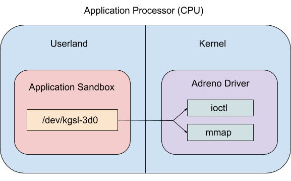
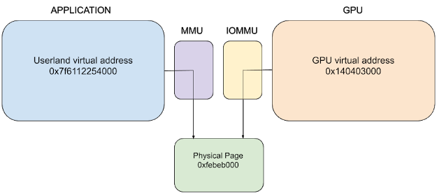
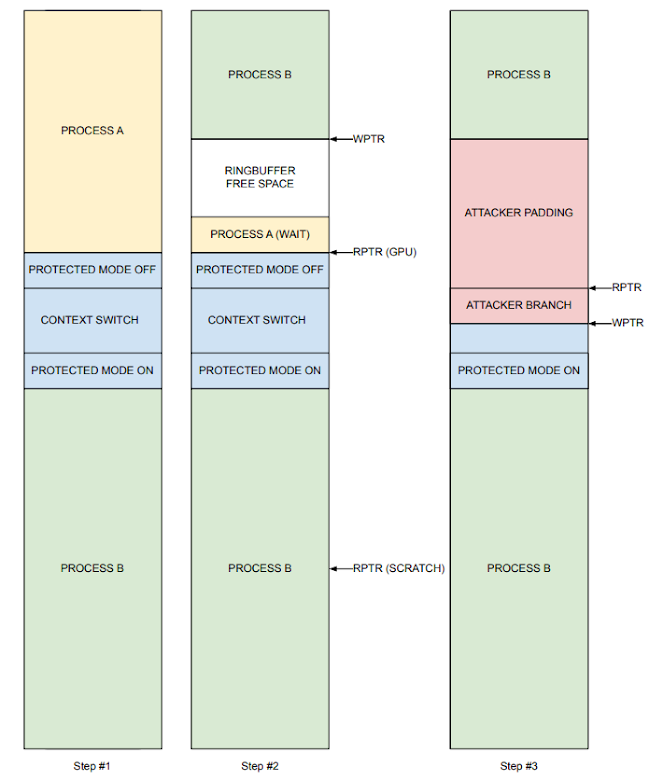

原文地址: Google Project Zero博客
Attacking the Qualcomm Adreno GPU
简介
这个工作基于CVE-2019-10567之上，作者注意到该漏洞修补不完整，于是和高通安全团队以及GPU工程师合作解决了这个漏洞的根本成因。补丁已经发送给OEM供应商进行集成。
Android 攻击面
Android应用程序沙盒是SELinux、seccomp BPF过滤器和基于每个应用程序UID的独立访问控制的组合机制，在不断发展之中。沙盒用于限制应用程序可以访问的资源，并减少攻击面。攻击者使用许多众所周知的途径来逃离沙盒，例如：攻击其他应用程序、攻击系统服务或攻击Linux内核。
从高层看来，Android有很多不同类型的攻击面，重要的几个如下：
- 普遍(Ubiquitous)攻击面
- 影响所有设备。
- 如脏牛。
- 芯片组攻击面
- 影响大部分android设备，取决于各种OEM供应商使用的硬件类型。
- 如Snapdragon SoC性能计数器漏洞、Broadcom WiFi固件堆栈溢出。
- 供应链攻击面
- 影响特定Android OEM供应商的大多数或所有设备的问题
- 如Samsung内核驱动程序漏洞。
- 设备攻击面
- 影响Android原始设备制造商的特定设备型号的问题
- Pixel 4 人脸解锁“Attention Aware”漏洞
对于Sandbox Escape而言，GPU是一个芯片组层面的有趣攻击面，因为很多Android应用会使用GPU加速计算，沙箱对底层GPU硬件有完全访问权限，Android设备中只有ARM Mali和Qualcomm Adreno两种类型的GPU设备。如果在这两种硬件设备中找到一个沙箱逃逸漏洞，则可以影响大部分设备。另外，由于GPU的复杂性和大量闭源组件(如微码和固件)，发现漏洞的可能性很大。
CVE-2019-10567的补丁
注意到Qualcomm Adreno内核驱动代码的一个用于修补CVE-2019-10567的commit:
1 | From 0ceb2be799b30d2aea41c09f3acb0a8945dd8711 Mon Sep 17 00:00:00 2001 |
为什么GPU侧需要ASLR？进而查看CVE-2019-10567的另一个commit:
1 | From 8051429d4eca902df863a7ebb3c04cbec06b84b3 Mon Sep 17 00:00:00 2001 |
为什么不能让用户提供的内容出现在ringbuffer里？这个补丁真的能防止这个吗？如果恢复了scratch buffer的base address会发生什么？
Background
Adreno Introduction
GPU硬件通常由OpenGL ES和Valkan等库抽象出来，这些库实现了标准API，以用于可编程通用GPU加速操作，在底层，这是通过与运行在内核空间的GPU设备驱动程序交互来实现的。

在Qualcomm Adreno中，/dev/kgsl-3d0设备文件被用来实现高级GPU功能，它可以在不受信任的应用程序中直接访问。
设备文件权限设置在ueventd中:
1
2sargo:/ # cat /system/vendor/ueventd.rc | grep kgsl-3d0
/dev/kgsl-3d0 0666 system system设备文件的SELinux标签为
gpu_device，且untrusted_app的SELinux上下文中有一条针对该标签的特定允许规则:1
2
3
4
5
6
7
8sargo:/ # ls -Zal /dev/kgsl-3d0
crw-rw-rw- 1 system system u:object_r:gpu_device:s0 239, 0 2020-07-21
15:48 /dev/kgsl-3d0
hawkes@glaptop:~$ adb pull /sys/fs/selinux/policy
/sys/fs/selinux/policy: 1 file pulled, 0 skipped. 16.1 MB/s ...
hawkes@glaptop:~$ sesearch -A -s untrusted_app policy | grep gpu_device
allow untrusted_app gpu_device:chr_file { append getattr ioctl lock map open read write };
因此untrusted_app可以打开设备文件。Adreno “KGSL(Kernel Graphics Support Layer)”内核驱动主要通过ioctl(如分配共享内存、创建GPU上下文、提交GPU命令等)和mmap(如映射共享内存到用户态应用程序)来调用。
GPU Shared Mappings
通常情况下，应用程序通过shared mappings将顶点、片元和着色器加载到GPU上和接收计算结果。因此某些物理页在用户态应用程序和GPU硬件之间是共享的。
用户通过IOCTL_KGSL_GPUMEM_ALLOC的ioctl调用向KGSL内核驱动程序请求分配，内核驱动分配一个物理内存区域后将其映射至GPU地址空间(某个特定context中)，最后，应用使用allocation ioctl返回的标识符将共享内存映射至用户地址空间。
此时物理页有两种不同视图：
- 用户态应用程序：使用虚拟地址访问映射到其用户态地址空间的内存。由CPU的MMU进行虚拟地址-物理地址转换。
- GPU硬件本身: 使用由KGSL内核驱动选择的GPU虚拟地址，内核驱动通过一个GPU专用页表结构配置设备的IOMMU(ARM中叫SMMMU)。GPU读写共享内存时，IOMMU将GPU虚拟地址转换为物理页，类似于CPU上执行的地址转换，但使用完全不同的地址空间(程序中的指针和GPU中的指针值不同)。

每个用户态进程都有自己的GPU context，当某应用在GPU运行时，GPU只能访问它与该进程共享的内存映射，一个程序不能要求GPU从另一个程序读取共享映射。具体实现中，在GPU上下文切换时，切换加载到IOMMU中的页表。每当GPU被调度运行来自不同进程的命令时，就会发生上下文切换。
全局共享映射会被所有GPU上下文共享，出现在每一组页表中，用于GPU和KGSL内核驱动程序之间的各种系统和调试功能。它们不会直接映射到用户态程序中，它们会映射到GPU和内核地址空间中。
在有root权限的安卓设备上，可以通过cat /sys/kernel/debug/kgsl/globals查看GPU全局内存映射，从而看到scratch buffer(临时缓冲区)。通过多次重启设备，可以发现scratch buffer开启了随机化，其他全局内存映射都在[0xFC000000, 0xFD400000]之间的固定位置。其中的原因是CVE-2019-10567的补丁只为scratch buffer分配提供了KGSL_MEMDESC_RANDOM flag。
1 | 0x00000000fc0df000-0x00000000fc0dffff 4096 scratch |
总之，临时缓冲区是一个正确开启了随机化的全局映射区域。
The Scratch Buffer
驱动程序源码中，scratch buffer在驱动的probe routines(探测例程)中被分配，因此scratch buffer仅在设备初始化时初始化:
1 | int adreno_ringbuffer_probe(struct adreno_device *adreno_dev, bool nopreempt){ |
综合device->scratch的用法看来，它主要的作用如下:
- 高优先级的GPU command中断低优先级的GPU command时，用来存放preemption restore buffer(抢占恢复缓冲区)的GPU地址。
- 需要计算ringbuffer(RB)的空闲空间时，在scratch buffer中被读取RB的读取指针(RPTR)。
CVE-2019-10567的补丁修改了对scratch buffer和RB的处理代码，因此应该关注上述第二种用例。
当GPU正在向共享映射中写入RPTR，且内核驱动程序正在从scratch buffer中读取RPTR值并将其用于分配大小的计算时，如果我们让GPU写入一个无效或错误的RPTR值会发生什么？
Ringbuffer Basics
ringbuffer的作用: 用户态应用程序提交GPU命令(IOCTL_KGSL_GPU_COMMAND)，驱动代码通过ringbuffer将命令发给GPU，内核驱动程序把命令写入ringbuffer，GPU从ringbuffer读取命令。
ringbuffer机制和典型circular buffers类似。在低层看来，ringbuffer是一个固定大小为32768bytes的全局共享映射，ringbuffer用两个指针索引，WPTR记录CPU正在写的位置，RPTR记录GPU正在读取的位置。为了在ringbuffer分配空间，CPU需要计算WPTR和RPTR之间的空闲空间。adreno_ringbuffer_allocspace中代码如下:
1 | unsigned int *adreno_ringbuffer_allocspace(struct adreno_ringbuffer *rb, |
RPTR被攻击者控制时，攻击者可以用刚写入的GPU命令覆盖还没有处理的GPU命令。因此，控制scratch buffer中的rptr值可以CPU和GPU之间对ringbuffer的同步收到破坏。
Attacking the Scratch RPTR
全局共享映射在CPU侧没有映射到用户态，因此不能直接在恶意应用写入scratch buffer中的RPTR，但由于scratch buffer映射到了每一个GPU context，包括攻击者进程的GPU context，因此可以从GPU侧写入恶意RPTR到scratch buffer。
这个过程需要进行如下两步:
- 验证该映射可以由用户可用的GPU命令写入。
- 恢复scratch mapping的GPU基址，它开启了ASLR。
验证scratch bufer可写
实验验证
并不是所有的全局共享映射都能被用户可用的GPU命令写入，但是可以证实scratch buffer是可写的。通过前述sysfs调试方法来找到scratch mapping的随机基址，然后用如下GPU命令序列来写入scratch mapping:
1 | /* write a value to the scratch buffer at offset 256 */ |
每个CP_*操作都在用户态构造、在GPU硬件运行。应用中一般直接使用OpenGL库函数和着色器，然后再被翻译为这些供应商支持库中的原生操作，但攻击者也可以直接通过设置GPU共享内存、调用IOCTL_KGSL_GPU_COMMAND来构造命令序列。但是这些操作没有在文档中记录，只能从驱动代码和手动测试中推断，部分操作为:
CP_MEM_WRITE: 向GPU地址写入一个常量。CP_WAIT_REG_MEM: 在一个GPU地址中是某个常量值之前暂停执行。CP_MEM_TO_MEM: 在GPU地址间拷贝内存。
因此上述代码可以通过检查CP_WAIT_REG_MEM返回值确定GPU是否向scratch buffer写入成功。
通过内核驱动代码验证
还可以通过验证内核驱动代码中对全局共享映射的页表的设置来确定scratch buffer是否可写。事实上，由于调用kgsl_allocate_global时没有设置KGSL_MEMFLAGS_GPUREADONLY或KGSL_MEMDESC_PRIVILEGED两个flag，scratch buffer是用户GPU命令可写的。
获取scratch buffer基址
暴力破解
由于全局映射的地址范围是固定的，且仅scratch buffer基址是随机化的，在排除其它静态全局共享映射位置之后，仅有2721个可能存放scratch page的位置，在一个中端智能机中平均需要花七分半来恢复scratch buffer地址，且时间上还有进一步优化空间。
另一种方法
scratch buffer还用于抢占，用来存放preemption restore buffer的基址。在抢占对GPU做准备时，内核驱动会调用a6xx_preemption_pre_ibsubmit函数，该函数会在ringbuffer中插入一些操作，它还会把scratch buffer指针放入ringbuffer中，作为CP_MEM_WRITE操作的指针。由于ringbuffer是一个用户可读的全局映射，因此有可能在ringbuffer合适的偏移位置提取出scratch buffer指针。
Overwriting the Ringbuffer
现在可以控制scratch RPTR的值了，接下来考虑如何重写ringbuffer，能够带来什么效果。
实际上有四个用于不同GPU优先级的ringbuffer，测试中选择了Android设备中使用最少的一个，以避免噪声(ringbuffer 0，根本没有被使用)。
ringbuffer全局映射有KGSL_MEMFLAGS_GPUREADONLY标志，因此不能直接修改ringbuffer内容，需要通过scratch RPTR原语来达到这个目的。
ringbuffer用于将命令从CPU发送到GPU，但是实践中，用户提供的GPU命令从不直接放在ringbuffer中，因为:
- 空间限制：ringbuffer空间有限，GPU命令可能很大。
- 进程隔离：所有GPU上下文都可以读取ringbuffer，希望确保一个进程只能读取该进程的命令。
实际上，系统级GPU命令是直接放在ringbuffer中运行的；用户级命令通过一个“间接分支“执行，用户级命令放在GPU共享内存中，它通过由adreno_ringbuffer_submitcmd插入ringbuffer的CP_INDIRECT_BUFFER_PFE 操作实现，该操作有两个参数，用户GPU命令的GPU地址和大小。用户级命令执行完成后回到ringbuffer中继续执行下一条ringbuffer中的命令。
除了”间接分支“操作以外，ringbuffer还有很多其他GPU命令设置和收尾操作，类似函数的序言和结语。包括抢占设置、GPU上下文切换、性能监控hook、勘误表修正、标识符、保护模式操作等。本文选定保护模式作为攻击目标。
Protected Mode
保护模式：GPU运行用户GPU命令时，会启动保护模式，限制对一些全局共享映射和寄存器的访问。在驱动代码中，只有很少一部分操作在禁用保护模式下运行，如抢占、勘误表修正、性能监控和GPU上下文切换相关操作。
那么，在上下文切换的时候，如果让GPU切换到攻击者控制的页表，攻击者就可以对任意物理地址进行读写，包括内核内存。
查看内核驱动代码发现，在切换上下文时，ringbuffer中有一个CP_SMMU_TABLE_UPDATE操作，使得GPU切换页表，而非切换IOMMU页表，这可能是基于性能考虑，避免使用内核中断、等待IOMMU被配置好。
进一步查看发现，GPU将IOMMU的TTBR0寄存器映射到保护模式GPU寄存器中，该寄存器用于存放IOMMU中GPU地址转换为物理内存地址的页表基址。这意味着TTBR0指向恶意页表后，就可以让任意GPU地址转换为任意物理地址。
CVE-2019-10567
在CVE-2019-10567补丁中，有两项措施:
- 随机化scratch buffer位置
- 确保用户指定的地址和值不会出现在ring buffer中
在whitepaper中，Guang Gong的攻击通过:
- 将恶意操作作为性能探测命令的参数插入ringbuffer。
- 破坏scratch buffer(当时是静态地址)中的RPTR指针，使其指向恶意操作。
- 恶意操作会关闭保护模式，然后分支到攻击者控制的GPU命令，然后覆盖
TTBR0寄存器，获取任意物理地址读写权限。
Recovering the Attack
之前已经绕过了scratch buffer的的地址随机化补丁，接下来需要绕过第二个部分，它通过分析子系统(profiling subsystem)防止攻击者控制的命令被写入ringbuffer，最简单的是使用其他方法插入攻击者控制的命令(如使用用户提供的GPU地址作为命令操作码)，但作者采用了另一种竞争方法。
攻击思路
保护模式的操作模式是:
- 关闭保护模式
- 执行特权操作
- 重新启用保护模式
这里选定上下文切换操作为目标。
主要攻击思路是，在GPU执行了关闭保护模式操作之后、执行上下文切换操作和开启保护模式之前，通过修改RPTR指针，让上下文切换操作被覆盖为攻击者控制的间接分支操作，在间接分支中覆盖TTBR0寄存器，使其指向攻击者控制的的页表，从而获取任意地址读取权限。

为了竞争成功，需要将间接分支写入到ringbuffer中正确的偏移量，且需要计时，以确保写入时GPU刚好执行了禁用保护模式，且没有执行上下文切换。
具体方法
实践中，通过wait命令在GPU启用保护模式之前暂停GPU，在这段时间内找到GPU上下文切换操作的offset，即写入间接分支的位置，wait命令后，直接在ringbuffer中覆盖写入，覆盖写入的offset很稳定，可能因为有缓存行为或内部预取缓冲区。这个竞争有20%的成功率，失败了不会有负面效果，因此可以不断尝试。
成功后，在禁用保护模式的情况下，进入攻击者提供的分支，修改TTBR0寄存器，使其指向恶意页表的物理地址。由于使用的物理地址，所以在构造恶意页表的时候需要知道分配的恶意页表内存你的物理地址，已有的在某一已知物理地址写入数据的方法有两个:
- 使用ION内存分配器
- 通过伙伴系统喷射内存
通过第二种方法获得了成功。
最终通过恶意页表能够任意读写Android内核代码和数据结构，导致内核任意代码执行。
Final Attack
除了20%的成功率以外，还有两个不稳定因素:
- 在不同版本的内核中，ringbuffer偏移可能不同。但是可以自动计算出来。
- 在已知物理地址分配内存的喷射技术很基本，仅用于演示，且所选的固定页可能正在使用中。可以选择使用ION方法或其他方法。
PoC源码解析
PoC源码一共有四个文件:
1 | adrenaline.cpp |
java部分在应用中注册了AdrenalineService实例，该service调用c++后台的stringFromJNI函数，获取字符串返回值并打印在屏幕上。因此c++中的stringFromJNI函数是PoC的入口。
1 | extern "C" JNIEXPORT jstring JNICALL |
adrenaline_rptr()
adrenaline_rptr函数的作用是获取scratch buffer基址，为了保证主线程状态的干净，开了一个子线程来获取，获取后通过pipe传输给主线程。子线程中在ring0创建了一个context，该context执行CP_MEM_TO_MEM命令，将GPU地址0xfc04b318处的数据直接拷贝到data_buf，取高位作为结果写入pipe给父线程。
解释如下:
0xfc04b318是ringbuffer0中的内容，不能保证在所有版本的内核中有效，ringbuffer内容会随着版本改变而改变。具体而言，该地址存储了
a6xx_preemption_pre_ibsubmit中CP_MEM_WRITE的目标地址参数，该目标地址是scratch buffer中的一个位置。scratch buffer中存放preemption restore buffer(抢占恢复缓冲区)指针的GPU地址。
adrenaline(rptr_base)
该函数是主要攻击函数，同样fork了两个线程，子线程用来创建上下文切换命令，用于竞争。父线程是主要攻击逻辑。
子线程
子线程流程比较简单:
- 在ring0中创建一个context
- 读取pipe，等待父线程的同步信号。
- 向创建的context中写入一个GPU命令(GPU执行到该命令后会发生上下文切换)
- 写入pipe，通知父线程上下文切换命令已经写入到ringbuffer
父线程
准备工作
父线程一开始mmap了几段buf，每个buf大小都是一页，且映射到了gpu:
1 | | wait_cmd_buf | data_buf | nop_buf | payload_buf | |
而后在ring0中创建了一个context。
构造虚假页表
虚假页表存放的目标物理地址是0xfebeb000，使用简单的喷射方法来尝试在该位置分配虚假页表。循环64次:
- 分配4096页(16mb)内存，在每一页都写入一个虚假页表。
- 虚假页表中，将gpu地址
0x40403000映射到了内核中的系统调用表位置0x821D9000
主要逻辑
准备阶段
- 向ringbuffer中填入868个nop命令，使得wait命令大致在中间的位置。(因为ringbuffer0基本没有其他应用使用，所以大概大小是ringbuffer0的一半)
- 写入wait_cmds命令，在其后放入36个nop(数量可能是基于缓存行或者预取buffer大小对齐的，所以比较稳定)，使得
- wait_cmds包含:
- wait1: 等待data_buf[0]值为
0x41414141，那将标志着ringbuffer布局调整完成。 - rptr: 写入scratch buffer rptr为
0x1ffc，覆盖rptr。 - wait_rptr: 等待scratch buffer rptr的值为
0x1ffc，确保上一步写入成功。 - wait2: 等待data_buf[1]值为
0x42424242，那将标志ringbuffer攻击开始。
- wait1: 等待data_buf[0]值为
- wait_cmds包含:
- 向pipe写入同步信号，使得子线程写入一个命令，触发GPU上下文切换，在ringbuffer中插入关闭保护模式的命令。
- 等待子线程的同步信号，表示上下文切换命令已经写入ringbuffer。
- 写入888个nop指令，使得wptr大约在ringbuffer的开头，接下来的GPU命令写到ringbuffer开头位置。
- 写入101个nop指令，用来保证竞争时的对齐，避免出错。
开始攻击
- 向data_buf[0]写入
0x41414141，使得wait_cmds中的rptr命令被执行。- 此时rptr指针被修改，之后的写入将可以覆盖之前的命令。
- GPU卡在wait2处。
- 写入payload，包括:
- 0x374个nop命令，足以覆盖所有ringbuffer内容，包括wait_cmds,之前写的nops以及上下文切换命令。
- payload 间接分支:
- 一个nop
- 借用驱动中”stabler synchrominzation”代码，主要使用
CP_INDIRECT_BUFFER_PFE命令插入间接分支。实际上指定的间接分支位置就在ringbuffer中。 - 一个指令，将恶意页表物理地址写入TTBR0寄存器。
- 页表改变后的驱动行为。
- 一些指令，在GPU映射中覆盖内核系统调用表，表示攻击成功。
- payload被dispatch后，所有命令都将被覆盖。
- 向data_buf[0]写入
0x42424242，使得wait2之后的命令被执行。
之后，理想情况下，切换上下文命令时，刚关闭保护模式，payload被解析，导致所有GPU命令被覆盖，从而执行payload的间接分支。
实际上我对整个攻击中的ringbuffer布局还没有想清楚，可能对GPU命令机制还不够了解，需要深入看驱动代码。